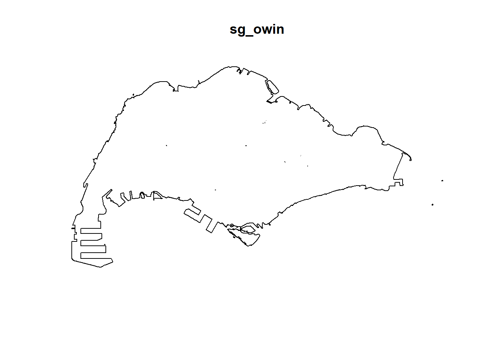
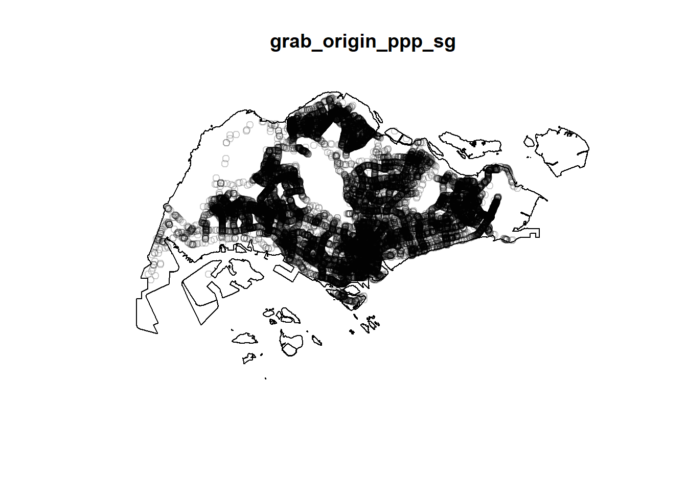

Take-home Exercise 1: Application of Spatial Point Patterns Analysis to Discover the Geographical Distribution of Grab Hailing Services in Singapore
1 Overview
1.1 Setting the scene
Understanding how people move around in a city is like figuring out its heartbeat—it shows us the rhythms that shape our urban lives. Thanks to smartphones and technology, we now have a bunch of data about how people move. When we use smart analysis tools like GIS, we can unlock valuable insights that help us plan cities better.
In 2020, GRAB shared a set of data called Grab Posisi, all about how people move around in Singapore. This kind of information isn’t just interesting; it’s super helpful for businesses, people who make decisions about the city, and those who plan how cities work. It’s like having a dynamic picture of how people move, helping us create cities that work well for everyone.
1.2 Objectives
The objectives of this exercise are to:
Apply geospatial analytics to address societal challenges
Use spatial point patterns analysis methods to explore Grab hailing services distribution in Singapore
Organise geospatial data into sf tibble data.frames using sf and tidyverse functions
Focus on Grab taxi location points, road layer within Singapore, and Singapore boundary layer
Generate traditional Kernel Density Estimation layers from the extracted data
Create either Network Kernel Density Estimation (NKDE)
Utilise tmap functions to display kernel density layers on an openstreetmap of Singapore
Describe spatial patterns revealed by the kernel density maps
By this exercise, I will:
Enhance my understanding of geospatial analytics applications
Develop proficiency in spatial point patterns analysis
Gain hands-on experience in organising geospatial data using sf and tidyverse functions
Explore Grab hailing services distribution patterns in Singapore
Generate and interpret Kernel Density Estimation layers
Understand the nuances of Network Kernel Density Estimation (NKDE)
Master the visualisation of spatial patterns using tmap functions on an openstreetmap
2 Getting Started
2.1 Data Acquisition
The study will utilise the following datasets to explore spatial point patterns analysis methods and reveal the geographical and spatio-temporal distribution of Grab hailing services locations in Singapore.
Reading layer `MPSZ-2019' from data source
`C:\fathimak2020\IS415-GAA\Take-home_Ex\Take-home_Ex01\data\geospatial'
using driver `ESRI Shapefile'
Simple feature collection with 332 features and 6 fields
Geometry type: MULTIPOLYGON
Dimension: XY
Bounding box: xmin: 103.6057 ymin: 1.158699 xmax: 104.0885 ymax: 1.470775
Geodetic CRS: WGS 84
Important
Project Transformation
Given that our dataset corresponds to the geographical boundaries of Singapore, it is necessary to specify the appropriate CRS for accurate spatial analysis. To achieve this, the st_transform() function is used to convert the CRS of mpsz_sf to SVY21 (EPSG: 3414)
2.3.2 Coastal Outline
In order to create a costal outline of singapore, we will use the st_union function to consolidate all subzone boundaries into a single polygon.
Code
outline = mpsz_sf %>%st_union()plot(outline)
2.3.2.1 Extracting outer islands
As seen in the figure above, the coastal outline includes outer islands where Grab service is unavailable. Through the code chunk below, we shall use the subset function to select planning subzones from the mpsz_sf dataset to exclude. These rows of data are stored in new dataframes.
Reading layer `gis_osm_roads_free_1' from data source
`C:\fathimak2020\IS415-GAA\Take-home_Ex\Take-home_Ex01\data\geospatial\OSM'
using driver `ESRI Shapefile'
Simple feature collection with 1759836 features and 10 fields
Geometry type: LINESTRING
Dimension: XY
Bounding box: xmin: 99.66041 ymin: 0.8021131 xmax: 119.2601 ymax: 7.514393
Geodetic CRS: WGS 84
Important
Project Transformation
Given that our dataset corresponds to the geographical boundaries of Singapore, it’s necessary to specify the appropriate CRS for accurate spatial analysis. To achieve this, the st_transform() function is used to convert the CRS of allroads to SVY21 (EPSG: 3414)
This dataset encompasses road networks spanning Singapore, Malaysia, and Brunei. To narrow our focus, we will extract roads exclusively within the Singapore boundary using the st_intersection function.
Code
sg_roads_all <-st_intersection(allroads,sg_sf)
Next, we will examine the road network’s road types.
Given our focus on Grab services, which primarily operate on roads excluding expressways, we will extract the relevant types from the road network. We can refer to OSM fclass to understand whichi roads are relevant here.
The head function reveals that there are 9 columns in the dataframe.
The field pingtimestamp is not in proper date-time format. It is stored as an int value. The following code chunk converts the data type of pingtimestamp from int to date-time format.
Assuming the dataset is initially in the WGS84 Geographic Coordinate System, as indicated by its latitude/longitude fields, we need to define the suitable CRS for spatial analysis within Singapore. The st_transform() function is utilised to convert the CRS of the grab dataset to SVY21 (EPSG: 3414).
This gives us the new simple feature data frame, grab_sf
2.4.2 Data Wrangling
2.4.2.1 Extracting Grab Trips Starting Locations
We will extract trip starting point for all unqiue trajectories and store them to a new df named grab_origin. To isolate the origin locations, we employ the following methodology:
Grouping by Trajectory ID:
The dataset is grouped by the unique trajectory identifier (trj_id).
Arranging by Timestamp:
Within each trajectory group, records are arranged in ascending order based on the timestamp (pingtimestamp).
Filtering for the First Row:
By selecting the first row within each grouped trajectory (row_number() == 1), we identify the earliest recorded location for each trip. This is indicative of the trip’s starting point.
Adding Temporal Information:
Additional temporal context is provided by introducing new columns:
✅ Task Complete! Grab taxi location points by origin points.
2.4.2.2 Extracting Trip Ending Locations
We will extract trip ending point for all unique trajectories and store them to a new df named grab_dest. We employ a similar methodology to extracting a trips origin location. Except here, within each trajectory group, records are arranged in descending order based on the timestamp (pingtimestamp). By selecting the first row within each grouped trajectory (row_number() == 1), we identify the latest recorded location for each trip. This corresponds to the trip’s ending point.
Code
grab_dest <- grab_sf %>%group_by(trj_id) %>%arrange(desc(pingtimestamp)) %>%#function from dplyrfilter(row_number()==1) %>%#first row after arranging in desc order gives dest mutate(weekday =wday(pingtimestamp, #define workdaylabel =TRUE,abbr =TRUE), #Monday = MON end_hr =factor(hour(pingtimestamp)),day =factor(mday(pingtimestamp))) #to change to ordinal scale
Note: It is not neccessary to change sg_sf into a ppp object as it will be converted to owin instead.
Check for duplicates and Handle Data Errors
Code
summary(grab_origin_ppp)
Planar point pattern: 28000 points
Average intensity 2.473666e-05 points per square unit
Coordinates are given to 3 decimal places
i.e. rounded to the nearest multiple of 0.001 units
Window: rectangle = [3628.24, 49845.23] x [25198.14, 49689.64] units
(46220 x 24490 units)
Window area = 1131920000 square units
Code
summary(grab_dest_ppp)
Planar point pattern: 28000 points
Average intensity 2.493661e-05 points per square unit
Coordinates are given to 3 decimal places
i.e. rounded to the nearest multiple of 0.001 units
Window: rectangle = [3637.21, 49870.63] x [25221.3, 49507.79] units
(46230 x 24290 units)
Window area = 1122850000 square units
Note: grab_origin_ppp objects has no duplicated points, just to be sure, check again
Code
any(duplicated(grab_origin_ppp))
[1] FALSE
Code
any(duplicated(grab_dest_ppp))
[1] FALSE
Introducing the owin object
Usually, when analysing spatial point patterns, we’ll confine our analysis within a certain geographical area - such as the Singapore boundary. In spatstat, an object called owin is specially designed to represent this polygonal region.
Creating owin object
Code
sg_owin <-as.owin(sg_sf)plot(sg_owin)

Combining Point Events and OWIN Object
Now, we’ll extract the relevant events that are located within Singapore.
##Rescale grab_original_ppp_sg and grab_dest_ppp_sg
grab_original_ppp_sg and grab_dest_ppp_sg is in metres. For futher analysis, we are required to rescale our data to kilometers, we can do so using rescale().
plot(kde_grab_dest_sg_bw,main ="Automatic KDE for Destination Points")

Other spatstat functions for bandwidth
bw.CvL() Cronie and van Lieshout’s Criterion for Bandwidth Selection for Kernel Density
bw.scott() Scott’s Rule for Bandwidth Selection for Kernel Density
bw.ppl() Likelihood Cross Validation Bandwidth Selection for Kernel Density
Code
bw_CvL <-bw.CvL(grab_origin_ppp_sg_km)bw_CvL
sigma
3.147573
Code
bw_scott <-bw.scott(grab_origin_ppp_sg_km, isotropic=TRUE) #{r}to return single bandwidth as scott provides 2 different bandwidths for each coordinatebw_scott
par(mfrow=c(2,2))plot(st_geometry(je), main ="Jurong East")plot(st_geometry(tm), main ="Tampines")plot(st_geometry(ck), main ="Choa Chu Kang")plot(st_geometry(jw), main ="Jurong West")